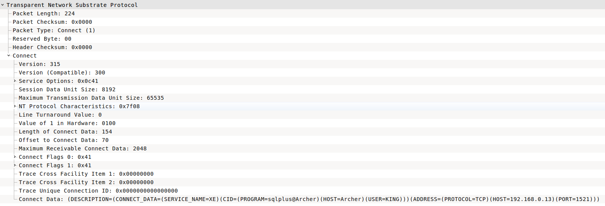

Oracle TNS Enumeration
The practical way to understand how to a specific protocol works is to use it's client tools and monitor its packets.
If you take a look to pure connection of SQL*plus client to a TNS listener from Wireshark, you'll find the first connect packet as bellow
|  |
|---|
| Figure 1. TNS Packet |
- TNS Packet Description
Transparent Network Substrate Protocol Packet Length: 224 Packet Checksum: 0x0000 Packet Type: Connect (1) 0x01 Reserved Byte: 00 Header Checksum: 0x0000 Connect Version: 315 Version (Compatible): 300 Service Options: 0x0c41 Session Data Unit Size: 8192 Maximum Transmission Data Unit Size: 65535 NT Protocol Characteristics: 0x7f08 Line Turnaround Value: 0 Value of 1 in Hardware: 0100 Length of Connect Data: 154 Offset to Connect Data: 70 Maximum Receivable Connect Data: 2048 Connect Flags 0: 0x41 Connect Flags 1: 0x41 Trace Cross Facility Item 1: 0x00000000 Trace Cross Facility Item 2: 0x00000000 Trace Unique Connection ID: 0x0000000000000000 Connect Data: (DESCRIPTION=(CONNECT_DATA=(SERVICE_NAME=XE)(CID=(PROGRAM=sqlplus@Archer)(HOST=Archer)(USER=KING)))(ADDRESS=(PROTOCOL=TCP)(HOST=192.168.0.13)(PORT=1521)))
- TNS Packet Hexdump
0000 08 00 27 3a fb 1d 3c 77 e6 68 66 e9 08 00 45 00 ..':..<w.hf...E. 0010 01 14 65 4f 40 00 40 06 53 28 c0 a8 00 0f c0 a8 ..eO@.@.S(...... 0020 00 0d 81 32 05 f1 04 d7 76 08 c9 98 31 e3 80 18 ...2....v...1... 0030 00 e5 0f 40 00 00 01 01 08 0a 0d 8a 13 4a 05 44 ...@.........J.D 0040 03 b3 00 e0 00 00 01 00 00 00 01 3b 01 2c 0c 41 ...........;.,.A 0050 20 00 ff ff 7f 08 00 00 01 00 00 9a 00 46 00 00 ............F.. 0060 08 00 41 41 00 00 00 00 00 00 00 00 00 00 00 00 ..AA............ 0070 00 00 00 00 00 00 00 00 00 00 00 00 00 00 20 00 .............. . 0080 00 20 00 00 00 00 00 00 28 44 45 53 43 52 49 50 . ......(DESCRIP 0090 54 49 4f 4e 3d 28 43 4f 4e 4e 45 43 54 5f 44 41 TION=(CONNECT_DA 00a0 54 41 3d 28 53 45 52 56 49 43 45 5f 4e 41 4d 45 TA=(SERVICE_NAME 00b0 3d 58 45 29 28 43 49 44 3d 28 50 52 4f 47 52 41 =XE)(CID=(PROGRA 00c0 4d 3d 73 71 6c 70 6c 75 73 40 41 72 63 68 65 72 M=sqlplus@Archer 00d0 29 28 48 4f 53 54 3d 41 72 63 68 65 72 29 28 55 )(HOST=Archer)(U 00e0 53 45 52 3d 4b 49 4e 47 29 29 29 28 41 44 44 52 SER=KING)))(ADDR 00f0 45 53 53 3d 28 50 52 4f 54 4f 43 4f 4c 3d 54 43 ESS=(PROTOCOL=TC 0100 50 29 28 48 4f 53 54 3d 31 39 32 2e 31 36 38 2e P)(HOST=192.168. 0110 30 2e 31 33 29 28 50 4f 52 54 3d 31 35 32 31 29 0.13)(PORT=1521) 0120 29 29 ))
Now base on our understanding, let's to build an equivalent request using ruby.
- TNS packet builder
def tns_packet(connect_data)
#=> Transparent Network Substrate Protocol
# Packet Length
pkt = [58 + connect_data.length].pack('n')
# Packet Checksum
pkt << "\x00\x00"
# Packet Type: Connect(1)
pkt << "\x01"
# Reserved Byte
pkt << "\x00"
# Header Checksum
pkt << "\x00\x00"
#=> Connect
# Version
pkt << "\x01\x36"
# Version (Compatible)
pkt << "\x01\x2C"
# Service Options
pkt << "\x00\x00"
# Session Data Unit Size
pkt << "\x08\x00"
# Maximum Transmission Data Unit Size
pkt << "\xFF\xFF"
# NT Protocol Characteristics
pkt << "\x7F\x08"
# Line Turnaround Value
pkt << "\x00\x00"
# Value of 1 in Hardware
pkt << "\x00\x01"
# Length of Connect Data
pkt << [connect_data.length].pack('n')
# Offset to Connect Data
pkt << "\x00\x3A"
# Maximum Receivable Connect Data
pkt << "\x00\x00\x00\x00"
# Connect Flags 0
pkt << "\x00"
# Connect Flags 1
pkt << "\x00"
# Trace Cross Facility Item 1
pkt << "\x00\x00\x00\x00"
# Trace Cross Facility Item 2
pkt << "\x00\x00\x00\x00"
# Trace Unique Connection ID
pkt << "\x00\x00\x34\xE6\x00\x00\x00\x01"
# Connect Data
pkt << "\x00\x00\x00\x00\x00\x00\x00\x00"
pkt << connect_data
return pkt
end
- SID Request
There is a data structure for interacting with the TNS which is similar to the following (DESCRIPTION=(CONNECT_DATA=(SID=#{sid})(CID=(PROGRAM=)(HOST=__jdbc__)(USER=)))(ADDRESS=(PROTOCOL=tcp)(HOST=#{host})(PORT=#{port})))
def sid_request(sid,host, port)
connect_data = "(DESCRIPTION=(CONNECT_DATA=(SID=#{sid})(CID=(PROGRAM=)(HOST=__jdbc__)(USER=)))(ADDRESS=(PROTOCOL=tcp)(HOST=#{host})(PORT=#{port})))"
pkt = tns_packet(connect_data)
end
Now we have everything to send our packet, let's to build a simple tns brute force to enumerate the exist tns listeners. The default behavior for oracle 11g is to reply with nothing if listener exist, and reply with error if it doesn't, the error similar to this g"[(DESCRIPTION=(TMP=)(VSNNUM=186647040)(ERR=12505)(ERROR_STACK=(ERROR=(CODE=12505)(EMFI=4)))).
Let's to warp everything together by build a SID brute force script
SID Brute Force
tns_brute.rb
#!/usr/bin/env ruby
# -*- coding: binary -*-
require 'socket'
if ARGV.size < 1
puts "Usage:\n#{__FILE__} <IP ADDRESS> [PORT]"
exit 0
else
host = ARGV[0]
port = ARGV[1] || 1521
end
sid = ARGV[2] || 'PLSExtProc'
#
# Build TNS Packet
#
def tns_packet(connect_data)
#=> Transparent Network Substrate Protocol
# Packet Length
pkt = [58 + connect_data.length].pack('n')
# Packet Checksum
pkt << "\x00\x00"
# Packet Type: Connect(1)
pkt << "\x01"
# Reserved Byte
pkt << "\x00"
# Header Checksum
pkt << "\x00\x00"
#=> Connect
# Version
pkt << "\x01\x36"
# Version (Compatible)
pkt << "\x01\x2C"
# Service Options
pkt << "\x00\x00"
# Session Data Unit Size
pkt << "\x08\x00"
# Maximum Transmission Data Unit Size
pkt << "\xFF\xFF"
# NT Protocol Characteristics
pkt << "\x7F\x08"
# Line Turnaround Value
pkt << "\x00\x00"
# Value of 1 in Hardware
pkt << "\x00\x01"
# Length of Connect Data
pkt << [connect_data.length].pack('n')
# Offset to Connect Data
pkt << "\x00\x3A"
# Maximum Receivable Connect Data
pkt << "\x00\x00\x00\x00"
# Connect Flags 0
pkt << "\x00"
# Connect Flags 1
pkt << "\x00"
# Trace Cross Facility Item 1
pkt << "\x00\x00\x00\x00"
# Trace Cross Facility Item 2
pkt << "\x00\x00\x00\x00"
# Trace Unique Connection ID
pkt << "\x00\x00\x34\xE6\x00\x00\x00\x01"
# Connect Data
pkt << "\x00\x00\x00\x00\x00\x00\x00\x00"
pkt << connect_data
return pkt
end
#
# SID Request Data
#
def sid_request(sid,host, port)
connect_data = "(DESCRIPTION=(CONNECT_DATA=(SID=#{sid})(CID=(PROGRAM=)(HOST=__jdbc__)(USER=)))(ADDRESS=(PROTOCOL=tcp)(HOST=#{host})(PORT=#{port})))"
pkt = tns_packet(connect_data)
end
sids = [ 'N00TEXIST', 'PLSExtProc', 'ORACLE', 'ORA', 'ORA1', 'ORA2', 'XE', 'SOA', 'SOA1', 'SOA2', 'DBA1', 'DBA2' 'HR', 'HR1', 'HR2','SAP', 'TEST']
sids.each do |sid|
s = TCPSocket.new host, port.to_i
s.send sid_request(sid, host, port), 0
response = s.recv(1000)
puts "[+] Found SID: " + sid if response.scan(/ERROR/).empty?
# puts "[+] No SID: " + sid , response unless response.scan(/ERROR/).empty?
s.close
end
Run it
ruby tns_brute.rb 192.168.0.13 1521
[+] Found SID: PLSExtProc
[+] Found SID: XE
Notes:
- This script will work on Oracle 11g and before
- Notice
# -*- coding: binary -*-at the top of the script because we are working on pure binary data that may not mean anything to the language.
- Research Oracle TNS Protocol
- Metasploit | sid_brute auxiliary module